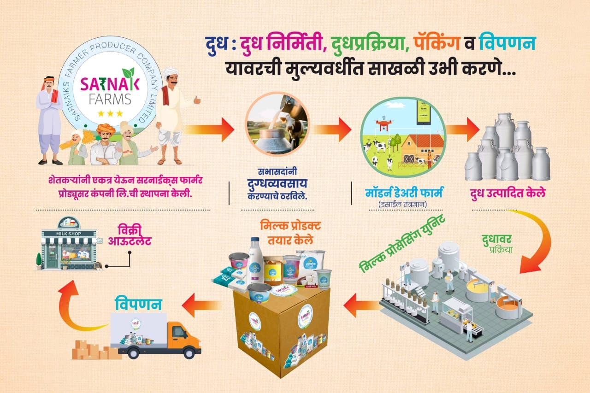

Your cart is empty

AUGUST 2020
In August 2020, we embarked on our journey with a modest start. Our launch on the 21st marked the beginning of our commitment to supporting local farmers. At this initial stage, we had 2 productive farmers contributing to our daily milk collection of 2 liters. We employed 2 dedicated employees and 2 farmers, totaling a small but passionate team of 4. This was just the beginning of our mission to create a sustainable and productive dairy ecosystem. During this period, we focused on building strong relationships with local farmers and establishing the necessary infrastructure for our operations.